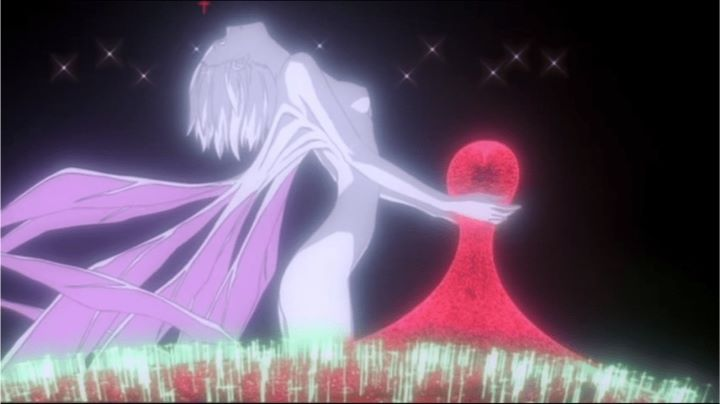

Fun story about "The End of Evangelion": the movie was released in North America by Manga Entertainment, instead of ADV Films (who originally released the original "Neon Genesis Evangelion" series in America). Like many of Manga's American early DVD releases, they went out of print quickly: despite being released in 2002, and again as a boxset in 2005, the movies were almost impossible to get a hold of by around 2008, only a few years after their release. This was one of the reasons I had held off buying available DVD copies of the original series, available in 2010 for as low as $30 new: without the all important sequel film, the series was kind-of incomplete, right? Eventually, the series would too be hard to come by, but somehow, a secret warehouse stash of the movies "Death and Rebirth" and "The End of Evangelion" became available, for as low as $15 each on Ebay, new, in 2019. With the "Evangelion" license announced to go to Netflix (and likely, never to receive a home video release in North America ever again: such was my fear at the time), I took the opportunity to buy the series and the two films on the old DVDs on Ebay. Let's see... $110 for a used series set, plus $30 for the movies ($140 total bought) versus what could have been $30 for a new series set, plus $100 for the movies used ($130)... or had I bought at the best times of the market, $30 plus $30 ($60)... the anime collector's market is complicated business. But I own it now, that's what matters.And was it worth it? Why does "The End of Evangelion" in particular have so much hype, almost as much independent hype as the main series? Sort of. It's much more of a blockbuster ending than the original series, and acts as a true replacement to episodes 25 and 26 of the series. But for everything it adds, it also keeps approximately the original intent, with a little more context. If you saw "Neon Genesis Evangelion - Death and Rebirth," which previews the first third of this film, you might have been led to thinking this would be an action-packed spectacle that answers all of your questions. By the second and third parts of "The End of Evangelion," director Anno reminds us this is his story, not the fans'. He is in charge here.To get a sense of what to expect, I'll explain the opening scene: masturbation.Technically occuring after a 1-minute live-action sequence, with no subtitles, appearing like a unrelated commercial for a Japanese drama, if not for briefly hearing the name of Eva characters in their discussion. Shinji stands over a comatose Asuka: she was reduced to a depressed shell of her former self when her traumatic memories overtook her, unable to pilot the Eva mechs or even will herself to live. Shinji begs her to wake up, unable to cope with the responsibility and horror of what's to come. After shaking her to wake up, he turns her over, accidently opening her shirt, revealing her bare breasts, the first genuine bit of nudity "Evangelion" had. Taken aback, Shinji quietly stands over her. The camera cuts away to the locked hosptal-room door. Then cuts back to Shinji's hand, covered in cum, where Shinji berates himself: "Man, I'm fucked up." Being a theatrical film instead of regulated to broadcast restrictions, the production team doesn't need to hold back. All the awkward sexual emotions and violent gore from the series is taken to 11.The plot might be a bit confusing when analyzed in any capacity. NERV and SEELE had worked together up to this point, but now that the angels are destroyed, the time has come to begin the "human instrumentality project," which will end by merging all human conciousness into one, removing all sadness, confusion and regret that comes from our quest to understand each other and ourselves. The movie begins with SEELE launching a full attack on NERV... or is it the Japanese government trying to stop NERV from killing the human race? Was it SEELE that sent in an army with machine guards to brutally kill the entire staff of NERV, or did they just send in the new army of Eva mechs to destroy the true Eva once and for all? NERV and SEELE want the same thing, to carry out human salvation, so why would they attack each other now? Whatever the reason might be, carnage breaks out, and it turns out the Angels were nothing compared to fighting people.Asuka does get a chance to shine in "End of Evangelion." Reduced to nothing by the last several episodes of the series, she comes back around when attacked, coming to the realization that her mother is part of her Eva, protecting her this whole time. This allows her to fight back against SEELE's army of Eva, making for one of the most badass action scenes of the series. Before she gruesomely dies. Gendo Ikari also gets better characterization here: in the series, we get a glimpse of his past before Shinji was born, but he only ever came off as a creepy-looking opportunist. In "End of Evangelion," we at least get a final monologue that explains why he had acted so cold to Shinji, and his motivation to return to his deceased wife, the only being that offered him any semblence of love. Before he gruesomely dies. And Shinji and Misato have a powerful exchange, with Misato making one last plea to convince Shinji to make up his mind and get in the robot. Before kissing him, and promising to make love to the 14-year old when he returns. Before she gruesomely dies.  The exciting action occurs mostly in the first half of the movie, which Anno trolls the audience with by placing the ending credits directly in the middle of, and not at the end, as if the movie was two double-lengthed episodes rather than a movie. The second half leans fully into the beginning of the human instrumentality project, full of religous metaphors and imagery. Shinji being in the Eva robot is almost irrelevent: he doesn't get a chance to fight before immediately being propped up as the center of the ritual. All the while, Rei's purpose in the event is made a little more clear, combining with Lillith (or Adam? I can't keep track) and becoming a naked giant larger than the planet, and greeting the human race one by one in embrace before they melt to nothing. Greeted by Rei, Shinji is given the sole choice on what becomes of humanity: to welcome her power and combine all consciousness, removing all pain, or to choose individuality and physical form. Like the end of the series, Shinji chooses to exist, although what that meant might not have been clear originally: here, it's more explicit that he denies the chance to remove pain, at the expense of him and all life. Even in this movie, hand-drawn crayon sketches make their way into the vision of the human psyche, although more metaphors are added to it. Even a live-action sequence comes in, primarily of people sitting in a theater, trying to explain Shinji's escape from reality through fantasy, and our mutual quest to feel needed, to be a part of something, even if only superficially. Sex is the closest thing humans have to that, to feel needed and to merge with and understand each other: such is why it has any significance in the movie. The second closest thing is violence: Shinji imagines strangling Asuka with his bare hands, as the truest emotion he can portray, even if that truth only hurts others. That it hurts someone, and that it was done by choice, is also a valid form of "therefore, I exist." These complex ideas are portrayed with abstract and maddening imagery for most of "The End of Evangelion," less a mecha anime and more an experimental Darren Aronofsky-like setpiece. It's easy to pass off the movie, simply saying "I don't understand." But it does make sense, if you are able to be honest with yourself. And with religous subtext, one can write books analyzing the meaning of the movie to its fullest, with full chapters for a single camera shot. ... but it doesn't necessarily replace the original episodes 25 and 26, as hated as those are. While some extra context is helpful, a little too much of the story in the first half of "End of Evangelion" doesn't add up properly, and the emotional conclusions are not all much different from those pencil sketches. Many of the strengths and flaws of "Evangelion" still remain in "End of Evangelion," even moreso, more powerful and more flawed. Not to mention, without watching the original series, this movie is entirely meaningless, so you have to watch the original series (with the obsolete ending) to get to this.From a production standpoint, the movie looks better thant the series ever did, presumably because of Production I.G.'s assistence to Gainax. The insane images almost rival the iconic pictures of the series. The musical score relies more on classical themes, but with smart mixing, feels powerful and cinematic. The English dub still has a couple problems, but thankfully, the strongest actors get the most screen time, and they've grown a lot in quality from the first episodes of the show. "End of Evangelion" was only released on DVD by Manga Entertainment in North America, and the release went out of print almost instantly. Like 'Death and Rebirth," the disc has issues, namely the fake 16:9 video compressed to a 4:3 ratio, meaning it takes up a fraction of your modern widescreen television, and with video quality and coloring that looks like a washed-out VHS. Over a decade later, the film is still considered a important part of otaku culture, but still hasn't received a proper re-release. After an announcement of Netflix getting the streaming rights in 2019, with a new English dub being produced, it is unlikely a home video release will ever come again.Hideaki Anno is a mad genius, and a true auteur of a modern generation. No one has as honestly portrayed depression, anxiety, and what it means to be human. And his directorial skills have improved, in part with help from Kazuya Tsurumaki, such that "Neon Genesis Evangelion - The End of Evangelion" is a culmination of everything he likely wanted to say. But "Evangelion" is still messy; Anno still moved forward to create yet another retelling of the story in 'Evangelion 1.01 - You Are (Not) Alone" and its sequels, which are better paced and better animated. I would almost certainly recommend that over searching for the original. But the search for the meaning in life is never-ending, and part of the human experience is to always seek out answers. Those answers will always be imperfect. Like we are. They will always be painful. Like we are. That's what it means to be human, and no matter wht recommendation someone gives, you cannot help but want to experience this movie anyway.
- "Ani" More reviews can be found at : https://2danicritic.github.io/ Previous review: review_Neon_Genesis_Evangelion_-_Death_and_Rebirth Next review: review_Nerdland